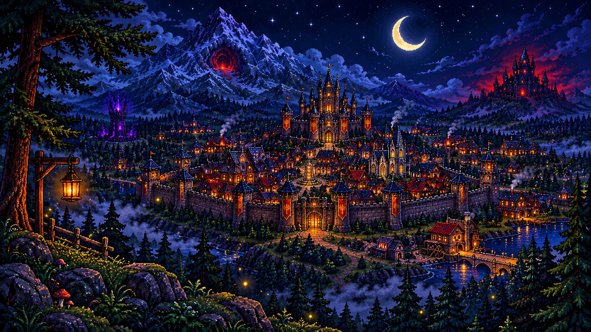

Um reino que nasceu de uma pedra antiga
O reino de Valdreinor
Tudo começou com dois viajantes, uma fogueira e uma pedra com dez runas apagadas. Cada seguidor da página vira um morador, e os comentários escolhem nomes, ofícios e até o rei. Hoje Valdreinor tem rei, muralha, biblioteca… e um dragão ancestral que acabou de abrir os olhos.
0
moradores
e contando
e contando